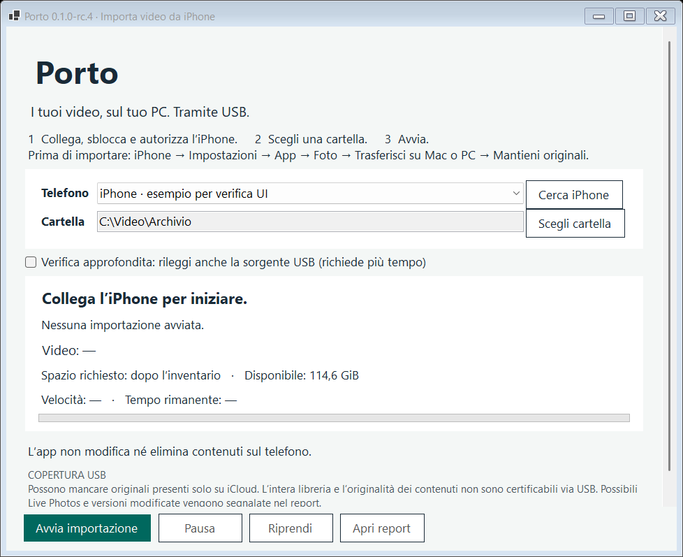

Dall’iPhone al PC.
Con un cavo.
Importa i video accessibili via USB in una cartella Windows. Una sola importazione, senza selezionare lotti.
Scarica Porto per WindowsVersione candidata 0.1.0-rc.4 per Windows 11 x64.
Archivio ZIP con runtime incluso. Gratuito, senza account nell’app.

Tre passaggi
per iniziare.
Non servono strumenti di sviluppo. Il sito presenta l’app; il trasferimento avviene sul tuo PC.
- Estrai lo ZIP e apri Porto.exe.Tieni tutti i file estratti nella stessa cartella. L’app non richiede privilegi amministrativi.
- Collega, sblocca e autorizza l’iPhone.Verifica “Mantieni originali” in Impostazioni → App → Foto → Trasferisci su Mac o PC. Se mancano i componenti USB, segui le istruzioni ufficiali Apple per Dispositivi Apple.
- Scegli una cartella NTFS e premi Avvia importazione.Prima viene letto l’inventario, poi parte la copia. Puoi mettere in pausa e riprendere. Alla fine trovi il report nella cartella scelta.
Una copia controllata.
- Byte ricevuti conservati senza conversioni o ricompressioni.
- SHA-256 confrontato con una rilettura del file salvato.
- Verifica approfondita opzionale tramite seconda lettura USB.
- Ripresa con confronto del contenuto, preservando i duplicati distinti dell’inventario.
- Nessuna modifica o cancellazione sul telefono e nessuna sovrascrittura di video esistenti.
Un report sincero.
Importati, già presenti verificati, esclusi, ambigui, mancanti noti, errori e video ancora da completare. Un controllo finale verifica che l’inventario USB sia rimasto stabile. Disponibile come testo e JSON, tutto locale.
“Completati tutti i video individuati tramite USB” riguarda l’inventario accessibile. La copertura dell’intera libreria iCloud non è verificabile.
Originali, Live Photos e video modificati
“Mantieni originali” evita le conversioni di formato. La verifica dei byte non certifica che la risorsa USB sia l’originale Foto non modificato. Fotografie escluse; possibili componenti Live Photo e varianti riconoscibili come modificate vengono segnalate come ambigue e non pubblicate tra i video autonomi. Senza metadati distintivi non è possibile riconoscere ogni caso.
iCloud, Internet e privacy
Porto funziona offline, non chiede Apple ID e non carica video online. Non scarica originali da iCloud né cambia impostazioni. Un originale solo cloud può non comparire nell’inventario, e il numero degli elementi mancanti potrebbe non essere disponibile.
Compatibilità, firma e componenti necessari
Destinazione Windows 11 x64 e cartella locale NTFS. Windows ARM, exFAT, rete e percorsi reindirizzati non supportati in questa candidata. Eventuali componenti Apple vanno ottenuti dalle fonti ufficiali. Eseguibile non firmato: le protezioni Windows possono mostrare avvisi o impedirne l’avvio. Non disattivare antivirus, SmartScreen o altre protezioni.
Spazio, ripresa e file temporanei
I temporanei associabili vengono confrontati con la sorgente e completati aggiungendo solo la parte mancante. Quelli divergenti o non associabili sono conservati e possono richiedere spazio aggiuntivo. Fino a tre passaggi automatici con attese cancellabili; gli errori permanenti restano nel report. Gli elementi ambigui già verificati vengono riutilizzati. Conserva la cartella .porto insieme ai video: contiene il catalogo necessario per evitare duplicati alle riprese. Usa una destinazione distinta per ogni libreria/telefono.
Che cosa è stato verificato
Compilazione e avvio UI su Windows 11 x64; copie sintetiche con corruzione, disconnessione, collisioni, arresti nei passaggi critici e recupero. Prove avversarie su conteggi, ripresa, worker, cataloghi e report; anche clip MOV, MP4 e M4V generate localmente. Inventario di 50.000 elementi, 2.000 copie effettive con secondo passaggio senza duplicati e un file sintetico oltre 4 GB scritto e riletto su NTFS. Simulazione di 250 GB logici, senza scrivere quel volume su disco.